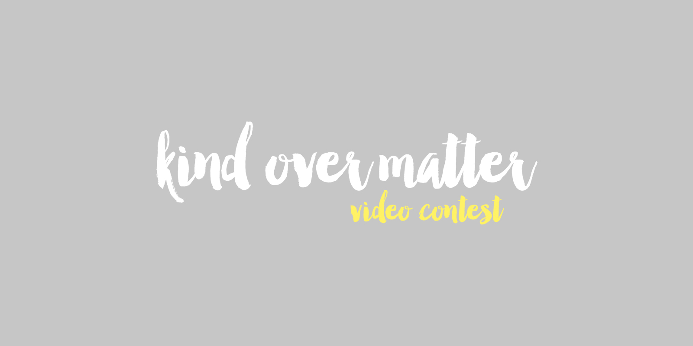
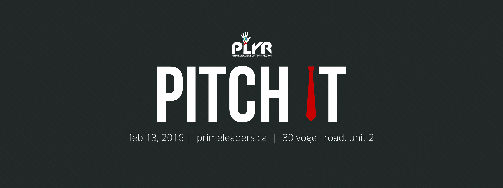
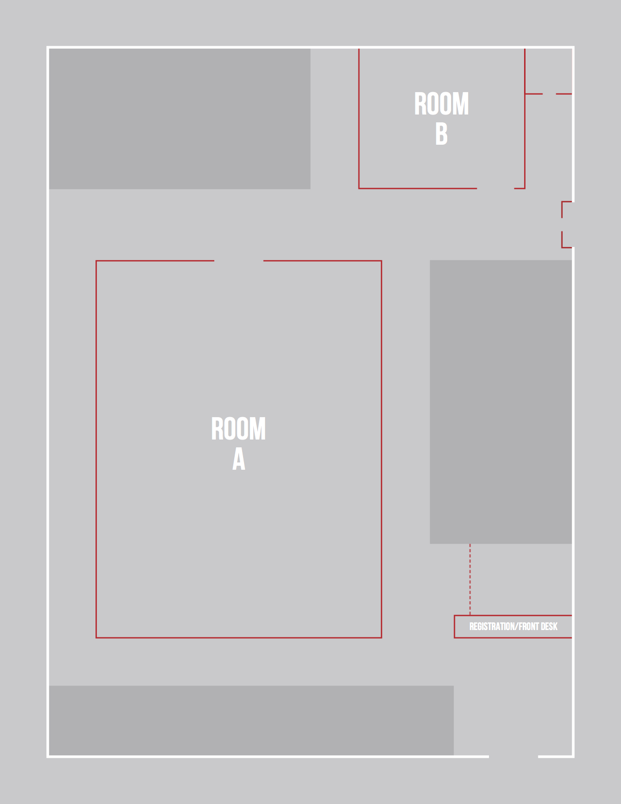
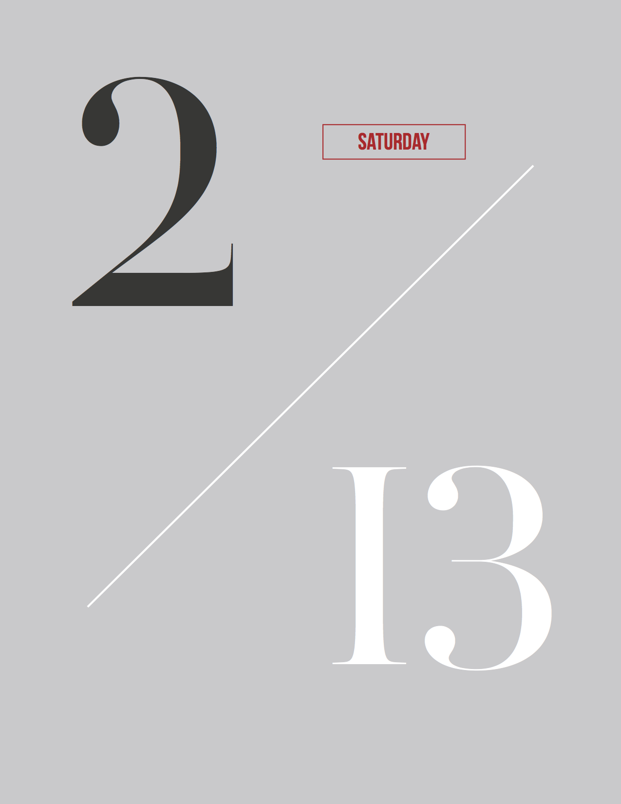

For two years, I worked at the marketing committee of Prime
Leaders of York Region, a local youth non-profit and philanthrophic organization in the Greater Toronto Area. I
had the opportunity to design promotional materials and branding from scratch, as well as lead the overall
creative direction for the Markham and Richmond Hill branches.
Kind Over Matter · Fall 2015
This was the second run of Kind Over Matter, an online video contest to raise awareness about doing good for others
and the community. We rebranded the contest and planned a promotional calendar to attract and engage a larger
audience. With a new logo and promotional video, we doubled the social media statistics from the year prior.

My redesign of the logo for 2015.
The KOM 2015 promotional video, co-directed and edited by me.
Pitch It 2016 · Winter 2016
The third run of our annual entrepreneurial competition. I touched up the logo and renewed the tie to vector
format. I also designed the online promotional materials and event resources for the day of, including the
information package, name tags, and signs.

The social media banner; sized for Facebook.


Pages from the competition participants' package.
How to Pop · Spring 2016
How to Pop was an interdisciplinary conference idea for youth to explore disciplines in arts, humanities, sciences,
and business. Our team worked on the design of the logo, as well as the icons to represent each discipline. The event
was never executed due to financial reasons.